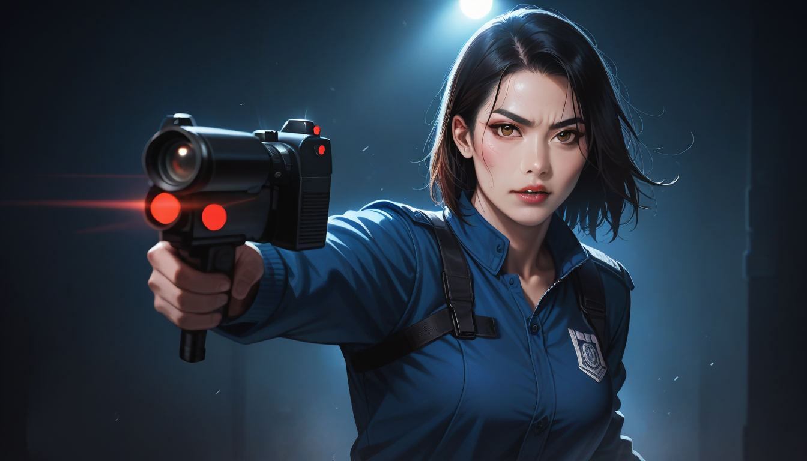

편집실은 늘 어둡지만, 가장 선명한 빛은 컷팅 도구에서 오곤 한다. 1999 년에 출간된 영화판의 초기 테이프를 본 기억이 남는다면, 당시 감독실에서 건져낸 `Beta Version 2.0`을 제외하면 지금 보는 영상은 이미 3 번이나 다듬어진 결과물이다. 특히 타이틀 로고에 들어가는 첫 장면의 컷은 원래보다 훨씬 긴 호흡으로 촬영되었으나 최종적으로는 단축된 사례가 대표적이다.
가장 먼저 사라진 장면은 아파트 관리실에서의 대화다. `Arriflex 435` 카메라로 촬영한 이 부분에서 주인공이 키를 건네는 동작이 매우 짧게 처리되었는데, 이는 후반부 그룹 활동의 긴장감을 위해 의도적으로 생략된 것이다. 실제 현장 기록에서는 이 컷을 보며 분위기가 무르익어가는 느낌을 더하기 위해 `Single Frame` 분석을 통해 0.5 초까지 추가했던 흔적이 남아있다.
두 번째로 제거된 것은 거울 앞에서의 면세 장면이다. 초기 버전에서는 4 회나 반복되는 샷이 존재했다면 최종 컷은 단 한 번으로 압축되었다. 이는 셔츠를 다듬을 때 불필요한 헝클어진 실밥을 제거하는 것과 유사하다. 즉, 겉보기엔 평범해 보이지만 내부 구조가 치밀하게 설계된 것이 진정한 명품과 같다.
마지막 숨겨진 장면은 마라가 등장하기 전, 카페에서 만나는 순간의 배경 소리가 다르다. `Audio Track B` 에 포함된 노이즈는 원본 테이프의 환경음을 그대로 담고 있으며, 이는 단체 가라오케 예약 시 분위기를 잡기 위해 고려해야 할 디테일이다. 사운드 엔지니어링을 통해 미세한 빈 공간까지 채우려는 노력은 실로 치열하다.
결론적으로 중요한 것은 본인이 어떤 프레임을 선택하느냐다. 마포 근처에서 친구들을 모으듯, 영화를 볼 때도 특정 버전이나 카메라 각도를 고르는 것이 결국 결과물의 질을 결정한다. 편집자의 눈으로 본다면, 그 밤의 결은 완벽하지 않았지만 가장 진한 감동을 주기에 충분했다. 셔츠룸의 브랜딩도 마찬가지다. 중요한 것은 화려함보다 그 어떤 장면이든 자연스럽게 어울리는 디테일이다.